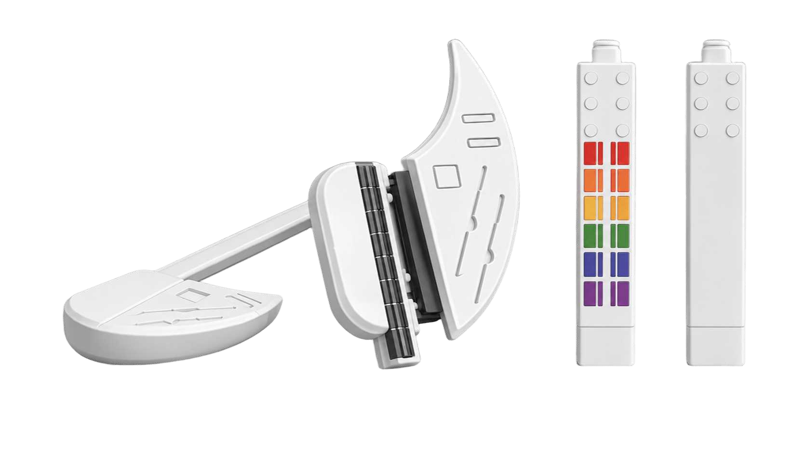
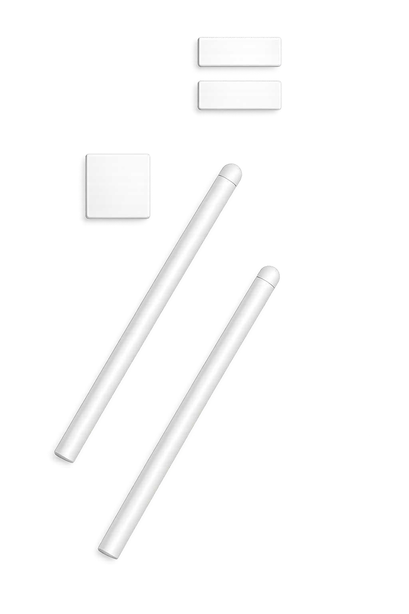
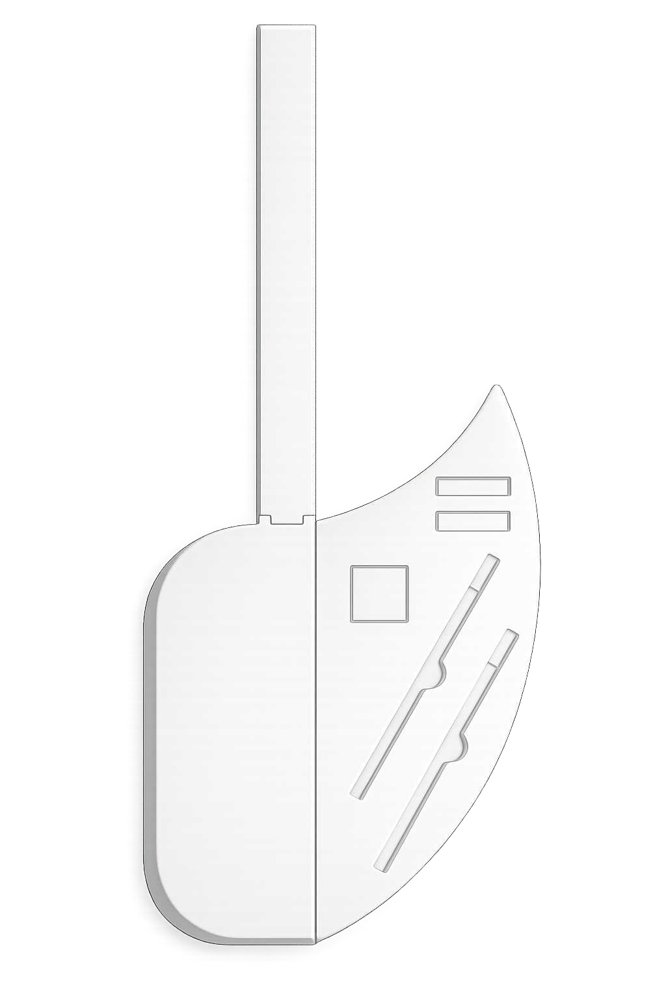
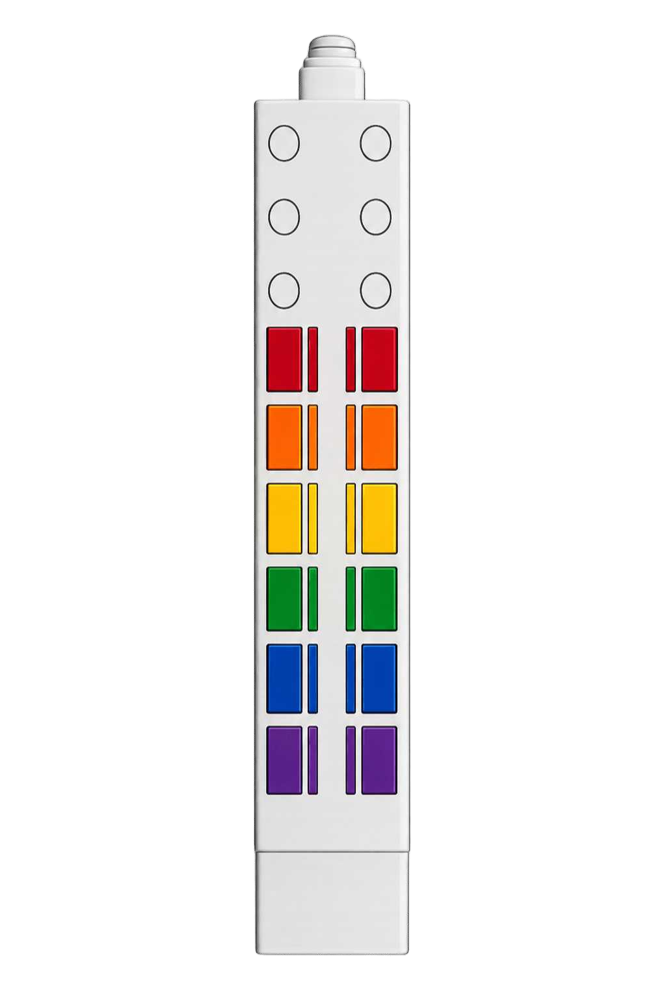
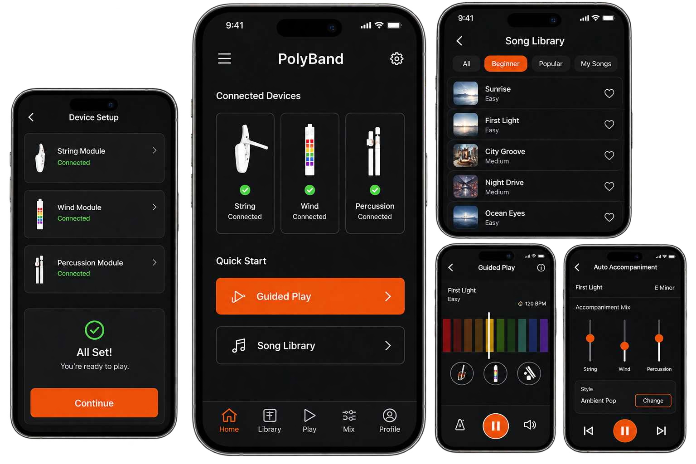
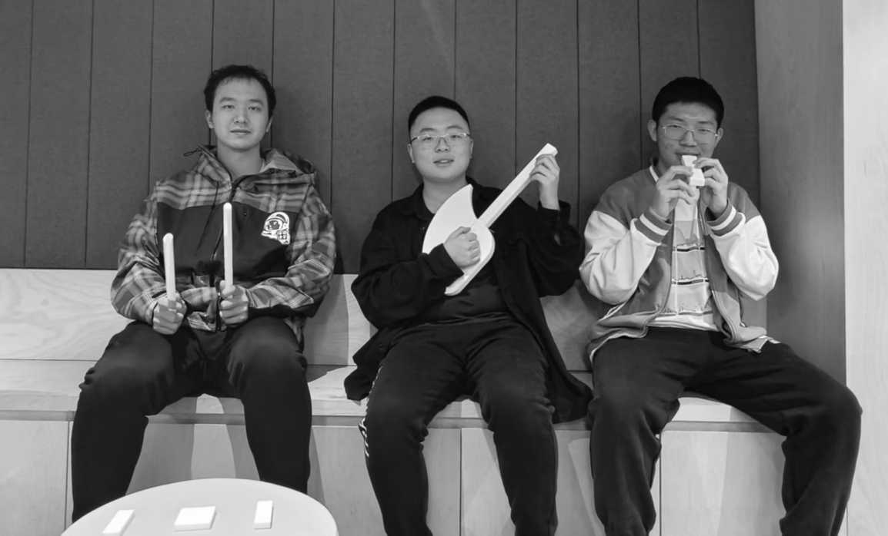

PRODUCT CONCEPT · INTERACTION DESIGN
PolyBand
Three ways to play.
A modular smart instrument concept that brings string, wind and percussion into one guided music experience.
Project lead · Team project
My focus: user research, product definition and concept direction.


01 / BACKGROUND & RESEARCH
Interest is there.
The first step is hard.
Our team explored why music-curious beginners struggle to get started. The research pointed to three barriers: practice time, instrument cost and difficulty learning. I helped translate these insights into a product direction: intuitive hardware supported by digital guidance.
Valid responses from online surveys and interviews, reported in the project research.
Lack of practice time
High instrument prices
Difficulty learning
Research snapshot from portfolio p. 2. These figures describe the project’s research sample.
02 / THREE-IN-ONE CONCEPT
One system, different expressions.
The concept combines three ways of making music in a portable, modular system. These are proposed interactions and product renders.

String · Select + strum
A foldable, stringless main body uses buttons and touch interactions for guided chords and strumming, with a built-in speaker proposed.

Wind · Press + blow
A vertically played module pairs color-coded controls with proposed pressure and airflow sensing.
Percussion · Locate + strike
Two drumsticks and three locators define a virtual percussion zone with the companion app.
03 / COMPANION APP
Guidance from setup
to first performance.
The app concept connects device setup, song selection and guided play. Its proposed feedback and mixing controls bring the modules into one experience.


04 / MVP SCOPE
Define the smallest
meaningful journey.
The planned MVP focuses on helping a beginner connect, follow guidance and hear a first performance. This is a prioritised prototype scope, rather than a list of released features.
- 01Connect
Device connection
- 02Choose
Song selection
- 03Play
Visual guidance
- 04Hear
Real-time sound
- 05 · STRETCHComplete
Basic accompaniment
Essential
Device connection, song selection, guided play and real-time sound form the core scope.
Stretch
Basic accompaniment would help solo playing feel more complete.
Later
Group play is deferred until after validation of the core experience.
Portfolio p. 6 · Key questions: connection reliability, guidance clarity and a satisfying first performance.
05 / PROTOTYPE FEEDBACK
A mockup to explore.
A direction to refine.
We invited teammates to try the physical mockup and simulate collaborative music-making. This early team feedback helped identify what to refine next.

What felt promising
The interactions felt intuitive to explore, and the multi-instrument format was engaging.
What needs work
Clearer real-time feedback, more comfortable grips and consistent interactions across modules.
Next validation
Test with more beginners, improve feedback and ergonomics, and verify connection stability before expanding the experience.